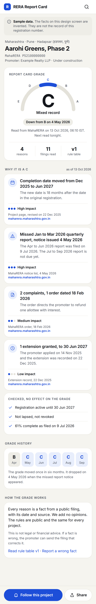
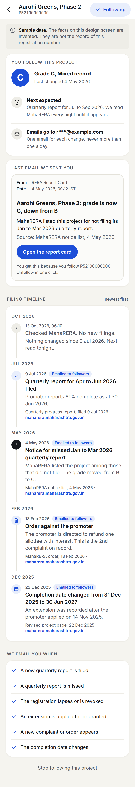

Source beside every claim
A reason without a filing name, a date and a link does not render.
Last updated 13 Oct 2026
A public report card for every under-construction housing project, graded from the project's own RERA filings, with a follow button that emails you when the record changes.
The customer is a homebuyer who is about to pay a token or booking amount for an under-construction flat, or who already pays builder demand letters. The RERA filings that show whether a project keeps up with its duties are public, but they sit on state portals, one page per project. The portals we checked show the number, dates and sometimes progress. Square Yards (checked 13 Oct 2026) shows a progress figure, the bank and the dates, and shows no lapse, missed quarterly report, complaint or extension. reratracker.com covers NCR only and has no public score. MahaRERA sent notices to 8,212 projects for missing the Jan to Mar 2026 quarterly progress report (QPR), reported on 4 May 2026. It paused its own grading plan in November 2024 because the Act gives it no power to grade.
Buyers now see a RERA number on almost every ad, because MahaRERA requires a QR code and the number on each one (order of 8 Apr 2025, 628 projects fined in July 2024, figure unverified here). They have a number to type and no page that says what the filings show. Channel partners drive 32% of buying across India (ANAROCK 2024) and about 60% in the Mumbai region (CREDAI-MCHI). Maharashtra had 50,673 registered agents, 31,980 active (May 2025). A broker who forwards a clean page is our distribution.
RERA Report Card gives every under-construction housing project one public page with a grade from A to E and up to five plain reasons, each citing the filing, its date and its source URL, and a follow button that emails the reader when the record changes.
Core loop: Search "[project name] RERA" or the number → Read the grade and cited reasons → Share the page on WhatsApp or follow it → Get an email when a filing changes → Come back each quarter when the next report is due
Scope: Decided. Version 1 covers Maharashtra (MahaRERA) and NCR (Haryana RERA for Gurugram and Panchkula, UP RERA, Delhi RERA). The user is a homebuyer before or during payment. The secondary user is a channel partner who shares pages of healthy projects. The grade uses only public filings: QPR filed on time or missed, registration lapsed or revoked, extensions, revised against original completion date, complaints and orders, and bank account and percent complete where published. Cited facts only is a product principle, because MahaRERA halted its own grading for lack of legal power and builders may sue a private grader for defamation. The pages are server-rendered public HTML. Out of scope are other states, promoter-level grades, a mobile app, paid tiers and interface languages other than English. Monetization is not covered here.
The owner's four tests, each answered in one line. The weakest is the third. Quarterly emails and the share loop are the answer to it.
Test 1: Passes. Sits on a money or decision moment. The reader decides whether to pay a token or a demand letter and the page answers one question at that moment.
Test 2: Passes. One party can adopt it alone. The reader needs no builder consent and no regulator integration, because every input is already public.
Test 3: Partly. Repeat use or share loop. The share loop is strong because the page is built to be forwarded on WhatsApp. Repeat use per buyer is weak, because a family buys one flat. Quarterly follow emails give four touches a year.
Test 4: Passes. Data compounds over time. Each nightly read adds a dated snapshot, and a portal shows only the current state (reasoning, to confirm in Milestone 0).
Milestones are in build order. Every route is public and needs no sign-in. Acceptance ids such as GP-2 are defined in PLAN.md section 6.
/| Label | Behavior |
|---|---|
| Input | One large input with the hint "Project name or RERA number". A RERA number matching a known pattern goes straight to its page on Enter. A lower-case number loads the same page. |
| Suggestions | A name query shows at most 8 suggestions, each with project, promoter, district and grade letter. |
| Unknown number | Shows "We do not have this registration yet. We read new projects every night." and stores the number once. |
| No script | With JavaScript off, Enter goes to /search?q= and shows the same results. |
/p/:state/:regno| Label | Behavior |
|---|---|
| Grade card | Shows one letter A to E on a five-segment gauge, a word ("Strong record", "Good record", "Mixed record", "Weak record", "Poor record"), the date of the last change, and "Read from MahaRERA on [date and time]. Next read tonight." The letter equals the stored grade of the latest run (GP-1). |
| Reasons | Shows at most five reasons that lowered the grade, largest points first. Each has a title, one detail line, a filing name, a date, a source link and an impact word (High, Medium, Low). A reason missing any of filing, date or link never renders (GP-2). With more than five, the page shows "2 more reasons in the full list". |
| Checked and unread | A card lists inputs that were read and clean. Another lists inputs we could not read, with the reason. An unread input never lowers the grade (GR-4). |
| Grade history | Six cells show the grade at the start of each of the last six months. A change is marked. |
| Withheld | With fewer than 3 of the 6 inputs readable, the page shows "Grade not available yet", the facts we have and the noindex tag (GP-6). |
| States | Graded, not enough filings, stale (banner after 14 days without a good read), lapsed, revoked (grade E), completed (no follow button), not found. |
| Disclaimer | Under every grade: "A grade summarises filings. It is not advice on whether to buy or pay." No banned word appears in page text (GP-7). |
| Layout | No horizontal scroll at 390 and 1440 pixels. From 900 pixels the grade card sticks left and reasons sit in two columns. |
| Label | Behavior |
|---|---|
| Pure function | grade(rules, filings, asOf) returns byte-identical output for the same input (GR-1). Replaying any stored grade from its stored filings and rule version returns the same letter, points and reasons (GR-2). |
| Rule table v1 | Versioned JSON, proposed weights in PLAN.md section 7.4. Bands: A 90 to 100, B 75 to 89, C 60 to 74, D 40 to 59, E 0 to 39. Revoked is E. Lapsed is at most D. A new version is a new file and re-grades every project. |
| Monotonic | Adding a negative fact never raises the grade (GR-3). A missing input never lowers it. |
| No money input | The function has no input for payment, advertising or relationship. |
/p/:state/:regno and /follow/confirm| Label | Behavior |
|---|---|
| Sheet | "Follow this project" opens a sheet with one email field, the button "Follow" and the line "One email when the record changes. One email each quarter. Nothing else." |
| Double opt-in | A valid email sends one confirmation. A repeat within 10 minutes sends none. The link opens a page with one button, "Confirm and follow", and only the button activates (FL-3). The link expires after 7 days. An invalid email shows "Enter an email like name@example.com". |
| Following state | The button shows a check and "Following" on later visits from the same browser, and opens a menu with "Unfollow". |
| Manage and delete | Every email footer links to a manage page with unfollow for each project and "Unfollow all and delete my email", which deletes the follower row at once. |
| Label | Behavior |
|---|---|
| Triggers | New quarterly report, missed quarterly report, registration lapsed or revoked, extension applied for or granted, new complaint or order, completion date changed. A grade change travels in the same email. |
| Two-run rule | A change must show in two consecutive nightly reads. A change seen once sends nothing (EM-1). Seen twice sends exactly one email per confirmed follower (EM-2). |
| Timing | At most one email per follower per day, between 08:00 and 21:00 IST. A change confirmed later waits for 08:00 (EM-5). |
| Quarterly email | 3 days after each state's QPR deadline (proposed), every follower of an under-construction project gets "[Project]: quarterly report filed" or "[Project]: quarterly report not filed", even if nothing else changed (EM-6). Followers therefore get at least four emails a year. |
| Body | The changed fact with its date and source, the old and new grade, one button and an unfollow link, with a List-Unsubscribe header. No recommendation and no banned word (EM-10). |
/p/:state/:regno/timeline| Label | Behavior |
|---|---|
| Events | Newest first, grouped by month. Each shows a marker, date, title, one line and a source link. An event that caused an email shows "Emailed to followers". |
| Follower cards | A follower sees "You follow this project" with grade, next expected filing and masked email, and "Last email we sent you". A non-follower sees "Follow" and none of these cards. The timeline stays public. |
| Quiet checks | Nightly checks with no change collapse into one line with a count. |
| Label | Behavior |
|---|---|
| States | Haryana RERA (Gurugram and Panchkula) first because it loads from Cloudflare. Delhi RERA and UP RERA as their portals allow. Codes: hr, dl, up. |
| One interface | Each state has one fetch job behind one interface. A fake state in a test needs no change to other code (IN-1). |
| Field map | Each state shows its own inputs. A state that does not publish an input shows it under "We could not read". |
| Label | Behavior |
|---|---|
| Share | "Share" opens the share sheet on a phone and copies the link on desktop. "Share on WhatsApp" opens wa.me with the page URL and the top reason. Links carry ?s=wa for counting. |
| Preview card | The page has absolute og:title, og:description, og:image and og:url. The image is a 1200 by 630 PNG under 300 KB (proposed) showing project, letter and top reason. It is drawn when the grade or top reason changes (SH-1, SH-2). |
| Promoter page | Route /promoter/:state/:slug lists the promoter's projects with grade, status and last change. It shows no promoter grade. |
| District page | Route /d/:state/:district lists projects with a filter by grade letter and name. |
| Search engines | Project number and name are in the title, the URL and the h1. Sitemaps list graded projects in shards of at most 50,000 URLs. Ungraded projects are noindex. |
| Corrections | Route /correct/:regno takes the disputed fact, the filing that shows the correct fact and a contact email. The page shows "A correction request is under review since [date]". A fact changes only when a stored raw object changes (CR-4). |
| Label | Behavior |
|---|---|
| Review | An advocate has reviewed copy, rule table and corrections. A data protection check is done. |
| Dark launch | Fewer than 2 wrong facts in 100 sampled reasons. The public correction log at /corrections is open. |
| Decision | Why it is open | Owner · date |
|---|---|---|
| India fetcher choice (money) | Our servers cannot reach MahaRERA. Options: Indian VM runner, Oracle free VM, Exit node on a machine in India, GitHub runners, residential proxy. Recommended: the Indian VM on DigitalOcean Bangalore, about USD 4 to 6 a month, after a one-day test. Section Tech has the table. | Owner · 2026-10-20 |
| Brand name | Candidates: RERA Report Card (working), Flatcheck, Nigrani, Allottee Desk, Sthiti (Hindi and Marathi for status), Tapasni (Marathi for inspection). Domain and trademark not checked. | Owner · 2026-10-26 |
| Promoter-level grades in v1 | Recommend no. A promoter grade needs rules for joint ventures, shell entities and old projects, and speaks about a company and not a filing, which carries the highest defamation risk. Show promoter pages with cited orders only. | Owner · 2026-11-09 |
| Sample registration number | Done. The design screens use the fictional number P52100000000 and the promoter Example Realty LLP. | Closed · 2026-10-13 |
| Wording reviewer | One advocate for copy, rule table and corrections. | Owner · 2026-11-09 |
| Monetization | Out of scope. No evidence on willingness to pay. | Owner · no date |
A clear, quiet public record. The page is a grey-white sheet and one blue accent marks only what the reader can act on or what is current. The grade letter is large and plain, and every claim sits next to its source. Words carry meaning before colour, so the page reads in greyscale. The owner called the earlier HTML screens generic, so both screens here start from eight real app screens on Mobbin (below) and no brand colour, icon or copy was taken from them.
A reason without a filing name, a date and a link does not render.
Impact is a word and three dots. The grade is a letter. No red and green traffic lights.
Follow on the grade page. Following on the timeline. Share is secondary.
Hand-written HTML in spec-assets/src/ rendered at 2x with headless Chrome. Both frames scroll. Both screens carry a "Sample data" notice because the facts are invented. Proofs at 1440 pixels: grade page and timeline.


| Reference | Taken | Used in |
|---|---|---|
| Credit Karma score page | Large score, next update line, three-stat strip | Grade card, stat strip, read line |
| Rocket Money gauge and history | Arc gauge in a white card, history card, capital-letter section labels | Gauge, grade history, labels |
| One factors list | Factor rows with status word and measured value | Reason rows |
| CRED score decreased | Impact card with one sentence and an impact word | Reason cards, impact dots |
| Wise transaction updates | Vertical stepper with timestamps | Timeline events |
| Better Stack incident timeline | Rail with typed icons, muted system events | Timeline markers, quiet nightly check |
| incident.io subscribed button | Subscribed button with a check in the header | Following button |
| Perplexity Patents | One large input, mode chips, how-to card | Search landing (specified, not rendered) |
| Dimension | Rule |
|---|---|
| Color | Canvas #f5f4ef, surface #ffffff, ink #15171c, secondary text #565b66, decoration only #8b909b, line #e4e2da. One accent #1d4ed8 with white text, wash #e8eefc. The accent marks the current gauge segment, the primary button, links, impact dots, the Following state and the Emailed tag. No red and green. Contrast figures are estimates and a tool check is in Milestone 1. |
| Typography | Inter, then Noto Sans Devanagari, Nirmala UI, Kohinoor Devanagari and system fonts, so Marathi and Hindi names render. Mono for registration numbers. Grade letter 72/72 at 700. Page title 24/30. Card title 16/22 at 600. Body 15/22. Detail 14/21. Small 13/20. Label 12/16, upper case, +0.08em. |
| Spacing and shape | Base 8 pixels with a 4 pixel half step. Radius 12 for inputs and chips, 14 for the email preview, 20 for cards, pill for buttons. A 1 pixel soft line and one light shadow. Phone first at 390 pixels. From 900 pixels the grade card is a 380 pixel sticky left column and reasons sit in two columns. Maximum width 1120 pixels. |
| Icons and motion | Outline icons beside a word, 1.7 to 2.2 stroke, inline SVG. Hover and press 120 ms, sheets 180 ms. Only opacity and a 4 pixel move animate. Reduced motion removes the move. Touch targets are 44 pixels or more. |
| Component | Purpose | States | Required behavior |
|---|---|---|---|
| Gauge | Show the letter on an E to A scale | Graded, withheld | Five arcs, current segment in the accent. Withheld shows grey arcs and "Not available yet". Has an aria-label such as "Grade C on a scale from E to A". |
| Reason card | One cited fact that moved the grade | Default, expanded | Icon, title, detail, impact row, source row. Expanded shows a short excerpt of the stored filing. Never renders without filing, date and link. |
| Impact label | Say how much a reason counted | High, Medium, Low | Three dots and a word. 10 or more points is High, 5 to 9 Medium, under 5 Low. |
| Grade history strip | Show change over six months | Default | Six cells of letter and month. Cells with the current grade use the accent wash. |
| Follow button | Start a follow | Default, sheet open, pending, following | Following shows a check. Opens a sheet with one email field. Pending says "Check your email to confirm." |
| Timeline event | One dated filing or check | Filed, missed, order, date change, nightly check | Marker, date, title, detail, source. The missed marker is ink, not red. The email tag shows when an email went out. |
| Email preview | Show what an email looks like | Default | A bordered copy of the real email inside the follower card. |
| Search input | Find a project by name or number | Empty, typing, no match | One large input, up to 8 suggestions with a grade letter, chips for cities. |
The data lives on state portals. Maharashtra and Delhi do not answer from our servers outside India or from Cloudflare. A fetcher inside India is needed.
| Source | From | Result |
|---|---|---|
| maharera.maharashtra.gov.in | our server outside India | Resolves, then times out after 15 seconds |
| maharera.maharashtra.gov.in | Cloudflare Workers (two European edge locations) | Times out |
| Delhi RERA and rera.mohua.gov.in | Cloudflare Workers | Time out |
| haryanarera.gov.in | Cloudflare Workers | Loads, HTTP 200 |
| up-rera.in/projects | Cloudflare Workers | Redirects to a maintenance page |
| maharera.maharashtra.gov.in | A machine in India | Loads with no CAPTCHA on the home search form. The form has a Registered or Revoked toggle and search by name, registration number, pincode, completion date and district, plus "View Projects on Map" |
Prior art, code not read: answerquest/mahaRERA-map-scrape (GIS map to CSV, 2023) and VinayJangra777/maharera_scraper (Playwright plus pytesseract CAPTCHA solving on some pages, Aug 2025). We do not solve CAPTCHA. An Indian cloud address is also untested, because only a home connection has loaded the portal so far.
| Option | Cost | Trade-off |
|---|---|---|
| (a) Small Indian cloud VM as a GitHub self-hosted runner (DigitalOcean Bangalore, AWS Mumbai) | About USD 4 to 6 a month | Always on, stable address. Needs updates and a locked-down runner on a private repo. A data centre address may still be blocked. |
| (a2) Oracle Cloud always-free VM, Mumbai | USD 0, card verification needed | Free. Extra account steps. Reports say idle free instances can be reclaimed (unverified here). |
| (b) Exit node on a machine in India | USD 0 | Proven to load the portal. Works only while that machine is awake. Not a service. |
| (c) GitHub-hosted runners | USD 0 within plan limits | Untested at the time of writing. Probably blocked like our servers outside India. |
| (d) Paid residential proxy | Per GB, price not fetched | Rejected unless (a) fails. Adds a third party and a policy risk. |
Recommendation: (a) on DigitalOcean Bangalore, tested for one day first. An hourly droplet costs cents to test and shows whether MahaRERA answers a data-centre address. Use (b) once for the first manual proof and for fixtures. Do not run the product on (b). The decision is the owner's because it spends money.
Everything else runs on our own servers or on Cloudflare as usual.
| Layer | Choice and status | Why | Cost or risk |
|---|---|---|---|
| India fetcher | One VM with a self-hosted GitHub runner, private repo. One fetch job per state behind one interface. Not started, blocked on the decision above | Only part that must be in India | USD 4 to 6 a month. Block risk |
| Raw storage | Cloudflare R2, key raw/state/regno/date/name with SHA-256. Not started | Provenance. Any grade replays from stored filings | About 6 GB at 40,000 projects (estimate) |
| Parse and grade | TypeScript pure functions in a Worker queue consumer, also in CI and on our own servers for replay. Rule table is versioned JSON. Not started | One code path in production and tests | No model cost in the grade path |
| Database | Cloudflare D1. Not started | See trade-off 1 | D1 limits not yet read |
| Public site | Workers render HTML, Cache API for pages. Not started | Edge reads for search traffic. No server to run | Cache purge on change |
| Preview images | SVG to PNG in a Worker when the grade changes, stored in R2. Not started | WhatsApp reads a ready image | Preview size limits to test |
| Cloudflare email sending from a Worker. Never Resend. Not started | House default | Limits and inbox placement unverified. Milestone 0 tests five inboxes | |
| Jobs and replay | Cron Triggers and Queues. Backfill and replay on our own servers via the R2 S3 API. Not started | Stock tools | None known |
| Tests | Unit and property tests in CI, Playwright against a fake portal, one real run per milestone | Replay test and monotonic test guard the grader | Fixtures need upkeep |
Ids are ULIDs and times are UTC integers. The site reads public tables with a read-only binding. Writes go through one Worker.
| Entity | Purpose | Important fields and relationships | Access |
|---|---|---|---|
| project, promoter | One page per project and promoter | state, regno unique, name, district, status, last_read_at. Project belongs to promoter | Public |
| fetch_run, raw_object | What was fetched and when | raw_object: project, run, r2_key, sha256, source_url, fetched_at, http_status | Metadata public, bytes private |
| filing | Parsed fact | project, raw_object, type, effective_date, payload_json, source_url, parser_version | Public |
| rule_table, grade, grade_reason, grade_unread | Replayable grade | grade: project, rules_version, letter, points, as_of, input_hash. Reason: rank, rule_id, points, filing, source_url | Public |
| change_candidate, change_event | Two-run rule and email trigger | candidate: kind, old, new, first_seen_run. Event: candidate, confirmed_at | Candidate server only, event public |
| follower, follow | Who gets email | follower: email_hash, email_enc, consent_at, unsub_token_hash. Follow: follower, project, state, last_emailed_at | Server only, encrypted |
| email_send | Send log and retries | follow, template, change_events, sent_at, attempts, status, bounce | Server only |
| correction_request | Right of reply | project, fact, evidence_url, contact_hash, opened_at, closed_at, outcome_note | Public view without contact |
| share_count, event | Metrics | Daily counts by project and source. No personal data | Aggregate public, events server only |
Public pages are read at the edge, and D1 sits next to the Workers. Postgres on the our server outside India adds a network hop per page and one machine to keep up. The cost is D1 size and write limits, which are not yet read. Exit: D1 exports to SQL and moves to Postgres. We keep the SQL plain for that reason.
The grader is code over parsed filings, so a grade is exact, cheap and replayable, and it cannot invent a fact. The cost is that scanned PDF orders get a link and a date and no summary. Exit: add optional extraction later behind a quote check that proves the text is in the stored page.
A change must appear in two nightly reads before anyone is emailed, so a portal glitch never sends a false alarm about a builder. The cost is up to one day of delay. Exit: a per-kind fast path for facts that are certain, such as a registration marked revoked.
| Milestone | Ships | Done when |
|---|---|---|
| 0. Reach the portals | India fetcher, terms read, field map per state, email test, D1 limits read | The owner picks the fetcher. One MahaRERA and one Haryana project load through it. Test emails reach five inboxes. |
| 1. Grade one state | MahaRERA ingest, parser, grader, grade page, timeline for 200 Pune projects | Replay passes. Rule table checked by hand on 20 real projects. Ten buyer interviews logged. |
| 2. Follow and email | Double opt-in, change emails, quarterly email, unfollow and delete | EM checks pass on fixtures and once on a real project. |
| 3. NCR states | Haryana first, then Delhi and UP RERA as portals allow | Each state passes IN-1 to IN-5 and has one real run. |
| 4. Pages at scale and sharing | Project, promoter and district pages, sitemaps, preview image, share text | A real WhatsApp preview shows for three pages. Search Console accepts the sitemaps. |
| 5. Launch gate | Advocate review, data protection check, dark launch, correction log | Fewer than 2 wrong facts in 100 sampled reasons. |